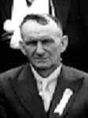
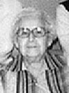

CALEB GAUVREAUfiche familiale
*******************************************************************************
Caleb GauvreauNaissance le 15 jun 1860 à La Pêche (Masham)
Baptême le 28 octobre 1860 à
Ste-Cécile de Masham (La Pêche)
Parrain Ménisippe Meunier, marraine Louise Drouen.
C'est Caleb, qui en janvier 1909,
vendit à la paroisse une partie de sa terre,
du lot 29 du rang II du canton de Masham, pour l'emplacement
actuel du cimetière de Ste-Cécile de Masham.
(contrat notaire T. Piché No 2248).
Père: Lucien GauvreauMère: Clémence Huot HuotteMariage: 10 mai 1881 à Ste-Cécile de Masham (La Pêche)
Épouse: Adéline Legrosdécède à l'âge de 82 ans
Naissance le 29 mars 1858 à La Pêche (Masham)
Baptême le 30 mars 1858 à Ste-Cécile de Masham (La Pêche)
Parrain Julien Baudoin, marraine Geneviève Lalonde
Décès le 24 avril 1940 à La Pêche (Masham)
Père: Émilien LegrosMère: Adéline Baudoin
*******************************************************************************
Enfant 1 Eusèbe GauvreauNaissance: 24 mar 1882
Mariage le 16 sep 1907 à St-Paul d'Aylmer
Conjointe: Elvina Ayotte
-------------------------------------------------------------------------------
Enfant 2 Dina GauvreauNaissance: 11 avr 1883
Mariage le 22 nov 1909 à Ste-Cécile de Masham (La Pêche)
Conjoint: Oscar Boulay n. 30 sep 1883
-------------------------------------------------------------------------------
Enfant 3 Thomas GauvreauNaissance: 15 jul 1884
Mariage le 17 sep 1907 à Ste-Cécile de Masham (La Pêche)
Conjointe: Mélina Brazeau
-------------------------------------------------------------------------------
| 
 |
Enfant 4 Cléophas Gauvreaudécède à l'âge de 88 ans. Naissance le 14 mars 1886 à Ste-Cécile de Masham (La Pêche) Décès le 5 mars 1975 à La Pêche (Masham) Sépulture au cimetière de La Pêche (Masham) Profession: Cultivateur. (ses ancêtres)Mariage le 9 août 1920 à Ste-Cécile de Masham (La Pêche) Conjointe: Bertha Beaudoinn. 7 nov 1896 d. 4 jun 1992 (sa famille) |
-------------------------------------------------------------------------------
Enfant 5 Amanda GauvreauNaissance: 13 nov 1887
Profession Religieuse, chez les Soeurs de Sainte-Marie de Namur.
-------------------------------------------------------------------------------
Enfant 6 Ernest-Noël Gauvreaudécède à l'âge de 89 ans.
Naissance: 25 déc 1890 à La Pêche (Masham)
Décès en 1979 à La Pêche (Masham)
Mariage le 23 juin 1914 à Ste-Cécile de Masham (La Pêche)
Conjointe: Fabiola Martindécède à l'âge de 86 ans.
Naissance: 17 fév 1895
Décès en 1981 à La Pêche (Masham)
-------------------------------------------------------------------------------
Enfant 7 Rose-Anna GauvreauNaissance: 16 jan 1893
Mariage le 12 jul 1920 à Ste-Cécile de Masham (La Pêche)
Conjoint: Adélard Martineau n. 19 mars 1893
-------------------------------------------------------------------------------
Enfant 8 Josaphat GauvreauNaissance: 7 aoû 1894 à La Pêche (Masham)
Décès: 13 août 1974
Profession Abbé, prêtre.
-------------------------------------------------------------------------------
Enfant 9 Antoine GauvreauNaissance: 25 juin 1899
Décès: 3 août 1984 à La Pêche (Masham)
Mariage le 11 jul 1933 à Ste-Cécile de Masham (La Pêche)
Conjointe: Delphine Bertrand n. 16 jan 1901
*******************************************************************************